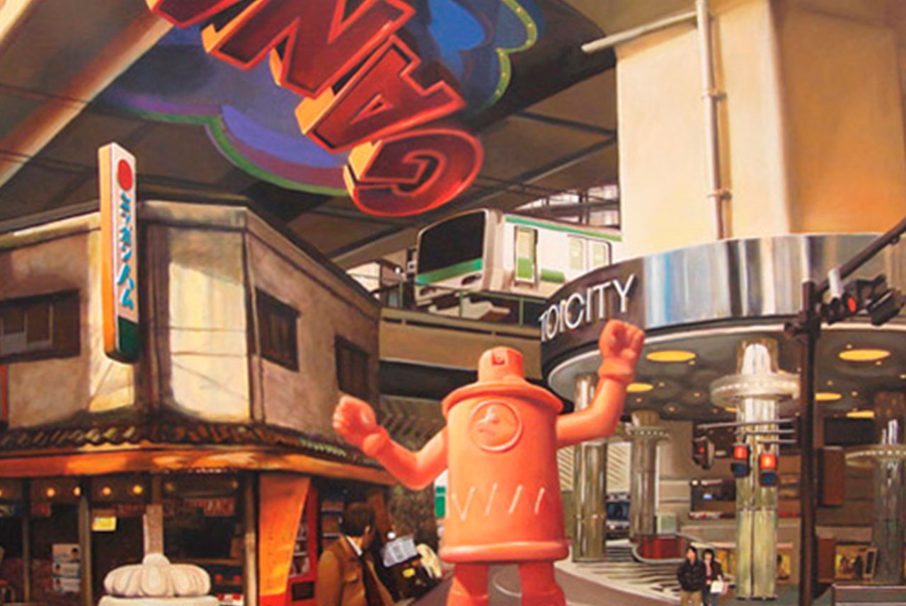

Un paseo del graffiti al street art
Spok

Descripción del taller
Este workshop será una introducción a la historia de graffiti y su relación con el street art a través de la experiencia directa del artista “Spok” .
Se hará un barrido de técnicas básicas para la expresión en el medio urbano poniendo varios ejemplos prácticos con el objetivo de adquirir nuevas ideas del espacio urbano así como pensar que tipo de lugares son sensibles a ser intervenidos y por qué.
Durante los dos días del workshop experimentaremos cómo proyectar una de nuestras ideas, teniendo en cuenta los recorridos previos de cada alumno y pudiendo hacer uso de las instalaciones del centro.
Impartido por:
Spok
Empezó a pintar graffiti a principios de los 90 , después de pasar por bachillerato y Bellas Artes fusionó el trabajo de calle con cuestiones más académicas , ha participado en múltiples exposiciones colectivas e individuales, incluyendo la primera exposición de "StreetArt" de la TATE Modern. También ha trabajado para "El Mal" encarnado en todas las multinacionales que buscan identificación con las subculturas emergentes. :)
Actualmente continúa trabajando todas las vertientes (graffiti , pintura , instalación, muralismo , publicidad,) a nivel nacional e internacional.
Fecha y hora
Requisitos previos
Artistas de cualquier ámbito que quieran saber más del mundo del graffiti, que tengan en mente ampliar sus habilidades y conocimientos.
Necesidades o materiales a aportar por el alumno
Los materiales y requisitos previos serán valorables porque siempre es más fácil partir de una base pero lo más importante son las ganas de empaparse y atreverse.
Número de horas
10 Horas
Precio
70€ (55€ para alumnos, exalumnos y profesores de artediez)